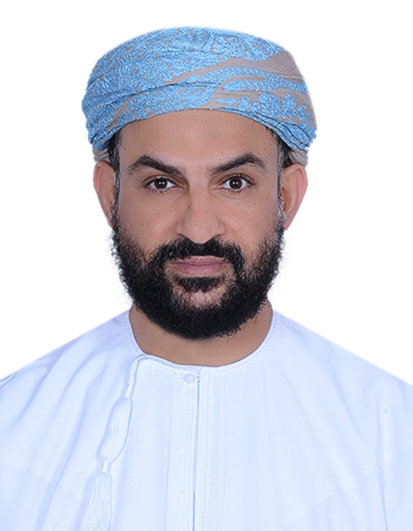

Listen in context
Arabic speech recognition shaped around clinical conversations and regional dialects.
SCIENCE & INNOVATION FROM OMAN
Clinical insight. Scientific curiosity. Technology with purpose. From Oman, we explore new ways to learn, understand clinical language, and work with evidence.
SCIENCE & INNOVATION FROM OMAN
Clinical insight. Scientific curiosity. Technology with purpose. From Oman, we explore new ways to learn, understand clinical language, and work with evidence.
ONE CONNECTED ECOSYSTEM
Seven initiatives across learning, clinical practice, research, and open data.
Medical education & exam preparation
Arabic clinical AI · R&D
Perioperative medicine toolkit
From research idea to submission
Residency rotation planning
Health data for better questions
Education data in context
Research & academic partnerships
OUR SOLUTIONS & INITIATIVES
A connected body of work across medical education, clinical practice, research methods, and open data. Each initiative explores a different challenge.
Showing 6 solutions
Explore each initiative for its scope and current work. Medad’s Arabic clinical AI research is introduced below.
Medical education & exam preparation
A learning space for students, doctors, nurses, and pharmacists. Build clinical reasoning with question practice, explanations, and focused revision.
Arabic clinical AI · R&D
Arabic clinical conversations deserve tools built around their language and context. Medad explores how speech recognition and AI can support structured clinical documentation, with clinicians reviewing the output.
THE WORKFLOW UNDER DEVELOPMENT
Arabic speech recognition shaped around clinical conversations and regional dialects.
Explore the generation of organized clinical notes from transcribed encounters.
Support review and correction before documentation is relied on.
Research and evaluation are ongoing. Deployment and data-handling requirements are discussed for each collaboration.
Perioperative medicine toolkit
Bring risk assessment, medication references, and perioperative planning into one practical workflow for healthcare professionals.
From research idea to submission
Support the work around your research: study planning, statistical interpretation, manuscript preparation, and journal selection.
Residency rotation planning
Organize rotations around training requirements, hospital sites, and scheduling constraints.
Health data for better questions
Explore health-system data, capacity, and trends to support analysis and planning in Oman.
Education data in context
Explore education trends, geographic patterns, and workforce indicators to inform planning and research.
OUR SCIENTIFIC APPROACH
Our guiding principles connect domain knowledge with careful evaluation. We distinguish an idea, a working application, and evidence of benefit.
Start with a clinical, educational, or research challenge. Understand the context before deciding where technology can contribute.
Consider sources, methods, and limitations. Bayan’s publication workflow includes review, citation checks, and revision; AI support does not replace professional judgment.
Bring clinical and technical perspectives together. Our Omani roots shape our interest in regional learning needs and Arabic clinical language.

OUR STORY
Bayan AI Technologies is a healthcare technology company based in Muscat. We bring clinical experience, research, and software development together to address the everyday work of healthcare and education.
Founded by physician and researcher Dr. Abdullah Al Alawi, our work connects a simple ambition with practical tools: help people learn, work, and create knowledge with greater clarity.
We welcome universities, healthcare institutions, and research groups interested in scientific exchange and collaborative evaluation.
SUPPORTING OUR JOURNEY
Bayan AI Technologies is supported by Oman’s Small and Medium Enterprises Development Authority and has received investment from Future Fund Oman.
هيئة تنمية المؤسسات الصغيرة والمتوسطة
صندوق عُمان المستقبل
Part of the Oman Investment Authority.
Bayan AI Technologies brings clinical knowledge, research, and software development together. Bayan, at bayan.edu.om, is our medical education solution. Our wider work explores clinical language, perioperative practice, research methods, scheduling, and open data.
Our work explores how people develop clinical reasoning, how Arabic clinical conversations can become structured documentation, and how evidence and data can support research and planning. Each solution addresses a different part of that work.
Medad is an active research and development project for Arabic clinical documentation. Research progress and readiness for routine clinical use are different milestones. We welcome discussion of evaluation methods, clinical language, and research collaboration.
Start with a research question or a clinical or educational challenge. We welcome discussions about collaborative evaluation, study design, regional language needs, and the responsible application of technology in healthcare.
The descriptions explain areas of work and intended uses; they do not establish clinical efficacy. Research findings should be considered alongside their methods, evaluation setting, and limitations. Visit the relevant project for more detail, or contact us about a specific scientific question.
RESEARCH & COLLABORATION
Connect with us around a research question, a method, or an idea.